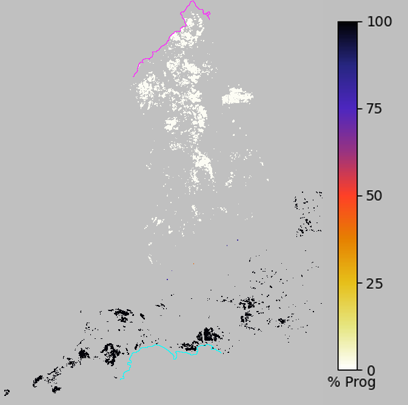
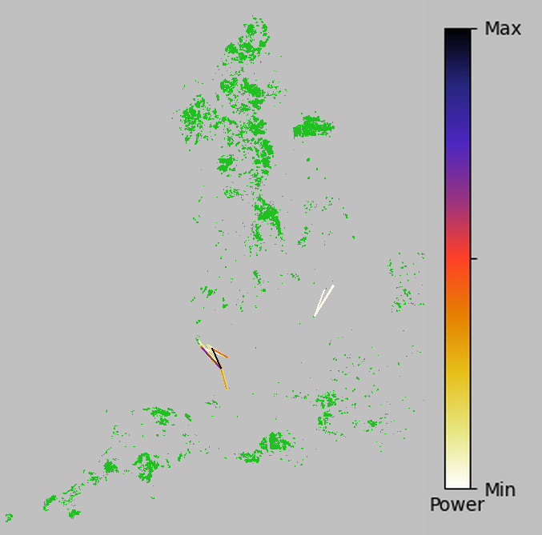

Condatis analysis results report for job: Nat_1k_heath_test_5
Analysis Type: Flow Only
| Name | Claudia Gutierrez |
| cgra@liverpool.ac.uk | |
| Date presented | 01/26/2023 10:13:00 |
| Time taken for analysis | 0:02:48 |
| Condatis Version | 1.20 |
Input Data and parameters
| Habitat layer | Nat_1km_heathland.tif |
| Source and Target layer | st_N_S.tif |
| Reproductive Rate (individuals per km2) | 1000.0 |
| Dispersal Distance (km) | 5.0 |
Results
Output files:All files included in zip file Nat_1k_heath_test_5_results.zip (Click to download)
The zip file includes:
- Nat_1k_heath_test_5.csv
- Nat_1k_heath_test_5.html
- Nat_1k_heath_test_5_autoST.tif
- Nat_1k_heath_test_5_flow.tif, .csv, .png
- Nat_1k_heath_test_5_hab.tif
- Nat_1k_heath_test_5_progress.tif, .csv, .png
- Nat_1k_heath_test_5_autoST.tif
- Nat_1k_heath_test_5_bottlenecks.shp, .dbf, .prj, .csv
The Help Documentation on the Condatis website provides further information to assist
with the interpretation of Condatis outputs and with troubleshooting,
and can be accessed here.
Maps shown in .tif files can be viewed using a mapping platform,
for example QGIS(free and open source)
or ArcGIS.
The overall speed of movement of the modelled species from source to target in this landscape is 2.127160e-06. The lower the speed, the longer the time it would take for the first colonisation of the target. The relationship between Condatis' speed and the rate of movement in population simulations is very significant, but not exact or linear (Hodgson et al., 2012). If speed is <<1 it probably indicates that many generations would be needed for the species to reach the target. If the speed is >>1 it may indicate that there are many alternative routes which all have a possibility of leading to the first successful target colonisation.
Flow Map

Fig. 1: The pattern of flow of individuals from source to target across the landscape. Flow through each cell is represented by the colour ramp, (note log scale). The source and target are labelled using MAGENTA █ and CYAN █ respectively. Cells that do not contain habitat are grey.
Progress of Movement

Fig. 2: The progress of movement from source to target is illustrated by the colour ramp. Bands of similar colour lie at a similar effective distance between the source and the target, e.g. a value of 50%, as demonstrated in the legend, represents the cells the species is expected to reach within half of the total 'travel' time. The source and target are labelled using MAGENTA █ and CYAN █ respectively.

Fig. 3: Shows the links with the highest power. Power can be thought of as the "strain" placed on that link relative to the rest of the circuit. This plot shows the top 50 links as requested. Consult Nat_1k_heath_test_5_bottlenecks.csv or view the shapefile Nat_1k_heath_test_5_bottlenecks.shp for actual power values. The habitat layer is in green for reference.
Copyright
The text of this report is copyright Condatis team 2018. The report is intended for the use of the registered user and his or her immediate colleagues.
If you wish to disseminate the report or any extract of the text more widely, please seek written permission by emailing contact@condatis.org.uk
Responsibility for data
The figures in this report are derived from original data uploaded by the user.
Reproducing, publishing or transmitting these figures to third parties may violate copyright or database rights associated with the original data.
By uploading data to this site you asserted that you have the required rights and permissions to upload the data and indemnified this site from any claims by third parties with respect to the uploaded data.
You also indemnify this site from any claims by third parties with respect to your usage of this report, in whole or in part.
How to cite Condatis
For preferred citation formats, please refer to our website
Most recent publication of the underlying scientific method: Hodgson, J. A., Wallis,
D. W., Krishna, R., & Cornell, S. J. (2016). How to manipulate landscapes to improve the potential for range expansion.
Methods in Ecology and Evolution, 7(12), 1558-1566. Doi:10.1111/2041-210X.12614.
It is very useful for us to know how Condatis is being used and to be able to report on its influence for future grant applications;
therefore please send a copy of any publications to contact@condatis.org or make us aware of the application of your Condatis outputs.